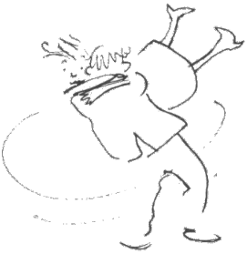
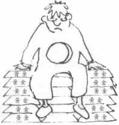
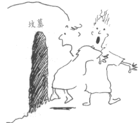
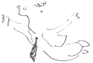
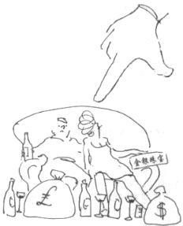
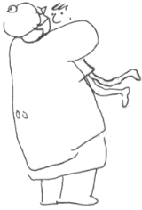

怎么回事？

人生在世，最叫人振奋的事情，莫如：成功的人际关系——父子、夫妇、爱侣、朋友等。
有人以为基督教信仰不外乎一大堆教义、戒律、规条，但其实基督教信仰的精髓在乎——在乎一个人，而不仅仅是一套哲学理论。基督教信仰所着重的关系，是人世间最重要的关系——人与造物主的关系。耶稣说首要的诫命是全心爱神，其次是爱人如己——两条诫命都涉及关系。
所为何事？
你我受造于世，就是为了与神建立关系。除非我们与神复合，否则总会觉得生命欠缺一点什么。世人常常感到空虚无助，就是这个缘故。有一个摇滚乐手这样形容他内心的感受：“我心里，空虚难受。”
有一个家庭主妇写信给我，说她“心中有一大片空白”；另一个女孩说她“灵魂穿了一个大洞。”

世人用各种方法来填补心中的空洞。有人希望用钱填补——可惜钱财不能满足人心。已故希腊船王奥纳西斯(Aristotle S.Onassis)是世界首富之一，临终前说过这样的话：“人即使拥有万贯家财，也不能满足人心的需求。”
又有人吸毒、酗酒、滥交。有一个女孩告诉我说：“这些事可以带来一时的快感，可是过后只会觉得更空虚。”又有人朝夕工作，醉心音乐、拼命运动、竞逐名声——这些事本身并无不妥，但不能满足人内心的饥渴。
人就算得着乐人世界最亲密的关系，也不足以填满“心里头的空虚”！
人受造原是为了与神在爱中合一，人若持续与神不和好，心里总不会感到满足。
按照新约圣经的说法，人心感到空虚，因人背弃了神。
耶稣说：“我就是生命的粮。”(约 6:35) 是的，只有耶稣可以使我们的心灵得满足，因为惟有耶稣可以帮助我们与神重修旧好。
一、“一生为何？”
我们迟早会问自己这样的一个问题：“我在有生之年，改作些什么？”“生命意义何在？”“人生在世，有什么目标吗？”
存在主义学家卡穆(Albert Camus)说过：“人总不能漫无目的的生存下去。”
除非与神建立了关系，否则不能找到人生的真正目标意义。人离开了神，万事不过一场烟云，转眼间已成了空！我们与造物主建立了关系，就能够明白人生的真正目标与意义。
二、“死后何往？”
我成为基督徒前，总会避谈“死”这个题目。我觉得自己离死很远！我不知道人死后是什么世界，也不想多作猜测——但其实我在逃避现实，因为人人难逃一死——偏偏神“把永生安置在世人心里！”(传 3:11)
世人都不想死，都想逃避死亡——可是，惟有藉着耶稣才可以得着永生——我们藉着耶稣与神建立了关系，不仅始于今生，更可以持续到永远。死亡不能断绝我们与神的关系。
三、“罪疚难当？”
我们如果自己诚实，就一定会承认自己常做错事——偶尔更会做出一些叫自己深以为耻的丑事！我们实在是自私自利的人，生命更遍布污点！
耶稣说：“从人里面出来的，那才能‘污秽’人。因为从人里面，就是从人心里，发出恶念：苟合、偷盗、凶杀、奸淫、贪婪、邪恶、诡诈、淫荡、嫉妒、亵渎、骄傲、狂妄……这一切的恶，都是从里面出来，且能污秽人。”(马可福音7：20－23)
人心灵最大需要，是“罪得赦免”。患癌症的人不论他想不想见医生，都需要接受诊治。同样的，犯罪的人，不论他是否认同自己有罪，都需要得着宽恕。察觉到自己有需要的人，当然比欺骗自己说没有问题的人好多了。
耶稣在十字架上为我们代罪受死，我们才有机会得着宽恕，与神修复关系，我们心灵的最大需要，由此得着满足。
耶稣与我何干？
为何要接受基督教信仰？再明显不过的答案是：因为基督教信仰是真理。
如果基督教信的不是真理，基督徒就在浪费自己和别人的时间！
如果基督教信的是真理，那就对人人都极为重要了。
我们怎样知道基督教信仰的真伪？
我们可以验证基督教信仰的真伪，因为基督教信仰是建基于历史事实上——关乎耶稣这个历史人物的出生、工作、受死、复活——这些全都有可供验证真伪的历史事实。

耶稣是谁？
耶稣是历史上最卓越不凡的人物，是西方文化的轴心——我们今天采用的历法，就是以耶稣的出生为划分：耶稣出生之前的年份称为：“主前”(Before Christ，简称BC)；耶稣出生之后的年份称为(Anno Domini，简称AD)。
耶稣是神的儿子。有人以为耶稣只不过是一个“优秀的宗教导师”——这看法显然不符合历史事实。
一、耶稣的宣称
耶稣说过祂是神的儿子，与神同等：耶稣宣称自己有赦罪的权柄，又说祂有一天要审判世界——世人终极命运如何，全在乎他们在世之时，如何看待耶稣。
已故剑桥大学教授、名作家鲁益师(C.S.Lewies)说得好：“如果耶稣只是凡人，却说出‘新约圣经所记的’那些话，他就绝对不可能是万世师表！他要么是疯到一个程度说自己是个皮蛋，要么是地狱的恶魔——我们必须作出选择：耶稣若非神子，就必然是狂人(甚至比狂人更恐怖的人！)……不要再自以为是地胡说耶稣是什么“万世师表”了——他的言行催迫我们选定路向——这当中不存在着模棱两可的犹疑！”
二、耶稣的品格
很多不会自称为基督徒的人，却会同意耶稣的一生是“毫不利己，全心为人”的完美榜样。大文豪陀妥也夫斯基(F.M.Dostoevsky)说：“我相信不会有人比耶稣更可爱、更有深度、更仁厚、更纯洁。虽不情愿，但不可不承认：‘从来没有人能与耶稣相比，将来也不会有人能比得上祂。’”
耶稣的教导，是举世公认最纯全、最深刻的教训——比古今中外任何哲人学士所说的都好。
鲁益师说：“事实摆在眼前，耶稣显然不是疯子或恶魔，因此，不论我觉得如何离奇、惊诧、难以置信，仍不得不承认一件事实：耶稣的的确确是神。神曾经道成肉身，来到这被仇敌占据的世界。”
三、耶稣胜过死亡

耶稣从死里复活的证据实在无懈可击。当耶稣的门徒跑进了耶稣的坟墓里，他们发现耶稣的尸身不见了，只剩下裹尸布叠在一旁。
其后六个礼拜，有超过500人亲眼看见耶稣。本来已灰心丧气的门徒们，生命就此忽然改换一新，基督教会也就此诞生，并且增长迅猛！
前英国首席大法令勋爵(Lord Darling)说过：“支持耶稣从死里复活的证据确凿——不论正面证据、反面证据、事实证据、环境证据，都不存在任何破绽！任何头脑清醒的陪审团，必然会作出一致的判决：耶稣复活的历史事实千真万确。”
对这些事实唯一合理的解释是，耶稣曾经从死里复活，所以证明他真是神的儿子。
耶稣为什么降世为人？
耶稣是唯一一个自己决定要来到世间的人，也是极少数甘愿受死的人。耶稣曾经说过，祂降世的唯一目的就是为我们死：“人子来……要舍命，作多人的赎价。”(可 10:45)
十字架是人类历史上数一数二的残酷刑具。历史学家西塞罗(Cicero)形容十字架的刑罚是“酷刑中最残忍可怖之酷刑。”
耶稣被钉十字架前，要先被绑在一条柱子上受鞭打；那鞭子不是普通的皮鞭，而是4、5条镶有尖刺铅粒的皮条带合成的鞭子。主后三世界教会史学家西比乌斯(Eusebius)这样描述罗马人的鞭刑：“犯人皮开肉绽，肌腱与内脏尽现！”
耶稣受完鞭刑，还要被迫把六尺长的十字架背到受刑的山上去(耶稣途中不支倒地)。耶稣到了钉十字架地地方，兵丁用六寸长的大钉子，猛力去钉耶稣的手腕和脚，钉牢了，就把十字架竖起来。耶稣悬挂在十字架上有六个钟头之久，祂的生命在难以言喻的剧痛中，一点点的流逝。
可是耶稣受的最大痛苦并不关于肉体，甚至不关于精神，却关乎灵性——耶稣背负我们的罪，不得不与至圣的父神上帝暂时隔绝。
耶稣为什么死？
耶稣说他为我们死——“为”是“替代”的意思。耶稣替代我们死，因为祂爱我们，不愿意我们因自己所犯的罪受刑罚。耶稣甘愿被钉十字架，无异于公开宣告：“我要以自己来承担众人的罪债。”
耶稣为你死、为我死——就算你或我是世上唯一的人，耶稣也会为你死、为我死！
使徒保罗说：“神儿子……爱我、为我舍己。”(加 2:20) 是的，耶稣爱我们，为我们付上性命做赎价。
“赎身”的原意出自奴隶市场：一个人付上价银，买下一个奴隶，然后让奴隶自由离去，这就是“赎身”。替人赎身的人必须付出赎价——耶稣以十字架上倾流的血为我们付了赎价，使我们得自由。

怎样得释放？
一、 摆脱罪疚
无论我们觉得内疚与否，总也不能抹杀一个事实：我们经常会在思想、言语、行为上触犯神的律法。人触犯地上的律法，尚且要面对刑罚，何况触犯神的律法？
“罪的工价乃是死。”(罗 6:23) 人触犯神的律法，所受的刑罚是死——与神永远隔绝。世人都犯了罪，都要接受永死的刑罚，但耶稣在十字架上替我们受了死刑，我们因此可以得着完全赦免，连罪疚也可以得除净。
二、 摆脱犯罪的习惯
犯罪会成瘾的。耶稣说：“所有犯罪的，都是罪的奴仆。”(约 8:34) 耶稣为我们死，叫我们摆脱罪的管辖。耶稣在十字架上打垮了罪的权势，因此耶稣可宣告：“天父的儿子若要你们得自由，你们就真自由了。”(约 8:36)
三、 摆脱恐惧
耶稣来到世间，“特要借着死，败坏那掌死权的，就是魔鬼，并要释放那些一生因怕死而成奴仆的人。”(希伯来书2：14－15)
我们实在不用再惧怕死亡！——因著耶稣得救的人，不用再惧怕死亡，因为死亡不再是基督徒的终点，却是通往天堂的门道——在天堂不再有任何奴役，甚至不会见到罪的踪影！
因为耶稣的救赎，我们一旦摆脱死亡的恐惧，也就摆脱其它一切的恐惧了。
获释放，得到什么自由？
耶稣的肉身已不在世上，但耶稣没有撇下我们不顾，反而赐下圣灵住在我们心中。我们若有耶稣的灵居住在心中，就可得著前所未有的自由。
一、 得到认识神的自由
我们犯的错成为神和我们之间的障碍。以赛亚书59：2说：“你们的罪孽使你们与神隔绝。” 藉着耶稣在十字架上的死，拆除了人神之间的阻隔，使我们得以与创造主建立关系，成为神的儿女！圣灵会在我们心中确认这种关系，并帮助我们亲近神，认识神。
圣灵又会帮助我们祷告，开启我们的心眼，让我们明白神的话语(圣经)。
二、 得到爱神爱人的自由
“我们爱，因为神先爱我们”(约一 4:19) 我们仰望主的十字架，就能感受神的爱；当圣灵进住我们的心中，我们感受到神的爱，就会生出爱神、爱人的心。耶稣释放了我们，叫我们的生命焕发爱的光辉——我们活着是为了爱耶稣、服事耶稣，也是为了爱人、服事人，而不仅仅是为了自己的益处。
三、 得到洗心革面的自由
俗语有云：“江山易改，本性难移。”然而耶稣的福音是：靠着圣灵，人的品性可以焕然一新。其实人人心底都有一个向善的渴求工：但愿自己可以脱胎换骨！
使徒保罗告诉我们：“圣灵所结的果子是仁爱、喜乐、和平、忍耐、恩慈、良善、信实、温柔、节制。”(加 5:22)
当圣灵进到我们心里，从圣灵而来的美好特质，也会逐渐显现在我们的生命里。
不信的借口？
神愿意在基督耶稣里宽恕我们、释放我们、赐我们圣灵居住心中——这全都是神赐人的礼物。我们面对礼物，可以选择要或不要：我们可以双手接过礼物包，兴高采烈地打开，再慢慢体味送礼人的深情厚意；我们也可以连连摆手说：“不了，心领了。”
可惜的是，很多人面对神的礼物都选择了“不要”，他们有千百样的借口！ 以下是几个例子：
一、“我不需要神”
这话背后的真正意思是：“我现在不是很快乐吗？我要神来干嘛？”说这话的人忽略了一事：人心灵最大的需要，不是得着“快乐”，而是得着“宽恕” ——唯有最狂傲的才敢夸口说自己不需要得着宽恕。
我们都需要得着宽恕——尤其是需要得着神的宽恕，否则后果不堪设想——因为神不但是慈爱的父亲，也是公义的终极审判官。
我们需要领受耶稣在十字架上为我们成就的救恩，否则终有一天得独自清还个人的所有罪债。

二、“我要放弃的太多了”
有时，神会使我们明白，如果我们想与神建立深交，我们生活中的某些恶习，必需要摒除。
我们可不要忘了：
☆ 神爱我们，只会要求我们放弃对我们有损无益的事。如果我们看见小儿子拿尖刀玩，我们会马上制止他——不是要扫他的兴，而是不想他受伤害。
☆ 我们所放弃的，远远比不上我们所得着的——不做基督徒要付出的代价，远远高过做基督徒付出的代价。
☆ 我们所放弃的，远远比不上神子耶稣所放弃的：耶稣已在十字架上为你我的罪而流血舍命！
三、“一定有阴谋”
人有时难以相信世上真有白白得来的礼物，他们觉得基督徒所说的救恩得来的太容易了，因此当中必有阴谋！这些人忽略了的是：人虽然白白的得着救恩，耶稣却为这救恩付出了高昂的代价，就是他的性命；我们得来容易，耶稣却付出重大！
四、“我不够好”
我们每个人都不够好！无论我们怎样努力做好，在神眼中也不完美，所以耶稣才要降世救人！藉着耶稣成就的救恩，我们才有胆量以真面目去到神面前，而神也会照着我们的本相接纳我们——不论我们是否犯下弥天大错，或者多么无药可救。
五、“我担心不能坚持下去”
如果我们单凭自己努力的话——我们的确没有能耐去做个好基督徒。好消息是：神的灵会进到我们心中，使我们刚强起来，又不断赐能力去跟随主。
六、“以后再算吧”
这个可能是最常见的籍口。很多人说：“我知道基督教信的是真理，但对我还不是适当时候……”他们就此打消了念头！这实在是太可惜了，因为人越是耽误，越是不想做出决定，也就越错失了神的祝福——人也是实在不能确定自己有否“下一次”机会。对我而言，我生平一大憾事，就是自己为什么不早一点领受神的祝福？
我们该采取什么行动？
新约圣经清楚告诉我们，我们若要领受神的礼物，就必须有所行动——我们必须表白对神的信心。
使徒约翰说：“神爱世人，甚至将他的独生子赐给他们，叫一切信他的，不至灭亡，反得永生。”(约 3:16)
“信”的人必须向神投入信心，信耶稣是建基于我们对耶稣的认识之后所做出的行动——信耶稣不是盲从附和，而是全心信任耶稣，把生命交托耶稣，就是婚礼中的男女彼此承诺说：“我愿意。”
人向神踏出第一步，方式各有不同。如果你现在就想向神踏出这一步，请你接受我提供给你的一个简单方法，这方法可以用三句话概括：
一、“对不起”
你必须求神宽恕你过去所做的一切错事，并且立志改过自新——圣经称这决定为“悔改”。
二、“谢谢”
我们相信耶稣为我们钉死在十字架上。你要感谢耶稣为你死，也要感谢他白白宽恕你、释放你、赐圣灵给你。
三、“邀请”
神不会硬闯我们的生命！你必须乐意接受神的礼物，主动邀请他的圣灵进到你心中居住。
如果你想与神建立关系，又愿意作出上述表示，就可以用下面的祷文向神祷告，向神踏出第一步：
主耶稣基督：
我过去做了很多错事，现在真的后悔了。(你可以用几分钟时间想想自己犯了什么错，然后求神赦免。)
主耶稣啊，求您赦免我，我要改过自新，不再故意触犯您的诫命。感谢您为我的罪死在十字架上，让我得着赦免，并从罪中释放！
感谢您愿意随时赦免我，又赐圣灵进入我心。我要领受您的赦免，也要领受您的圣灵！主耶稣啊，求您借着圣灵常常与我同在。
主耶稣啊，我感谢您倾听我的祷告。阿门！(诚心所愿)。
然后又如何？
一、 把你信耶稣的事告诉别人

你一定要把你信耶稣的事告诉别人，好表明你做的决定。有时候我们向人表白信仰后，所信的才变得实在。但有一事我要提醒你：开始的时候，你最好先把你信耶稣的消息，告诉那些希望你信耶稣的人！
二、 读圣经
我们信耶稣，把生命交托耶稣，就成了神的儿女(约 1:12)。神是我们天上的父亲，祂和地上的父亲一样，渴望与儿女亲亲密密。我们聆听父神的话(主要是藉着圣经)，向父神倾吐心声(籍着祷告)，与父神感情就会日益加深。圣经是神的话语，若你刚开始读圣经，不用心急，每天读几节约翰福音就好了，要紧的是求神在你读圣经的时候向你说话。
三、 天天与神倾谈心事（祷告）
有一个祷告模式很能够帮助我们祷告，简称为“ACTS”
A —— Adoration(倾慕)
为神的美善、神的作为赞美神。
C —— Confession(认罪)
求神赦免我们的过错。
T —— Thanksgiving(感恩)
为健康、家人、朋友等等献上感恩。
S —— Supplication(祈求)
为自己、朋友、其它人的需要祈求。
四、 加入一家有生气的教会
我们必须成为教会的一员。教会是一群基督徒聚集敬拜、听候神的说话，与弟兄姊妹相知相交、鼓励互勉的地方——因此不难想像是个活泼及吸引人的地方！
我在1974年2月16日信耶稣，向神做了一个短短的祷告(就象上面“邀请”的祷文)，就此改变了一生。那是我一生中最明智、最重大的决定！如果你信耶稣，我肯定这决定也会成为你一生最明智、最重大的决定。